Institut National de la Jeunesse et des Sports d'Abidjan
Manuel utilisateur
officiel
Application de gestion intégrée INJS
Édition 2026
Comment utiliser ce manuel
Ce manuel décrit l'application telle qu'elle fonctionne aujourd'hui à l'INJS d'Abidjan. Il ne présente aucune fonctionnalité prévue, en cours de développement ou non ouverte : chaque écran, chaque bouton et chaque procédure décrits ici ont été vérifiés dans le code source de l'application.
Trois façons de trouver l'information
Je connais mon profil
Ouvrez la fiche correspondant à votre fonction dans le sommaire de gauche. Elle ne contient que ce qui vous concerne.
Je cherche une procédure
Utilisez la recherche en haut de page : elle interroge les titres, les modules, les profils et les messages d'erreur.
J'ai un problème
La partie XII liste les difficultés courantes avec leur cause, la vérification à effectuer et la solution.
Présentation générale
À quoi sert cette application
Profils concernés : Tous les profils
L'application de gestion intégrée de l'INJS Abidjan réunit dans un seul environnement numérique l'ensemble des opérations administratives, pédagogiques et financières de l'institut. Elle remplace la circulation de dossiers papier et les fichiers tableurs dispersés par un système unique, partagé et traçable.
Chaque agent accède à la plateforme avec son compte personnel. L'application ne montre à chacun que les écrans correspondant à ses responsabilités ; les autres restent invisibles. Cette restriction n'est pas un confort : elle garantit qu'aucune donnée sensible — notes, paiements, dossiers d'étudiants — n'est consultable par un agent qui n'a pas à la connaître.
Ce que l'application permet
- Instruire les candidatures et organiser les concours d'entrée.
- Gérer la scolarité : admissions, inscriptions, dossiers et documents.
- Construire les maquettes LMD : UE, ECUE, crédits et volumes horaires.
- Élaborer et publier les emplois du temps, en détectant les conflits.
- Enregistrer les présences, y compris par badgeage QR sur mobile.
- Saisir et contrôler les notes, conduire les délibérations et les jurys.
- Établir les diplômes, attestations et relevés de notes.
- Suivre les finances étudiantes et les vacations des formateurs.
- Produire des statistiques et des tableaux de bord de pilotage.
- Administrer les comptes et les droits avec une traçabilité complète.
Ce que l'application ne fait pas
Ce manuel ne documente que les fonctions réellement disponibles dans la version en service. Certaines fonctionnalités annoncées dans les documents de conception ne sont pas encore ouvertes à tous les profils : elles sont signalées comme telles au fil du texte, et jamais présentées comme opérationnelles.
Organisation générale de la plateforme
Profils concernés : Tous les profils
L'espace de travail se compose de quatre zones constantes. Les reconnaître suffit à se repérer dans n'importe quel module.
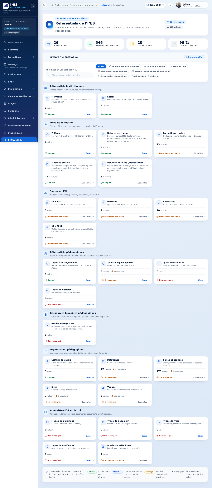
1. La barre latérale
À gauche, elle liste les modules auxquels votre compte a droit. Un module se déplie pour révéler ses écrans. Si un module n'apparaît pas, ce n'est pas une panne : votre profil n'y a pas accès. Le bas de la barre affiche votre nom et votre rôle.
2. La barre supérieure
Elle contient le moteur de recherche global, le sélecteur d'année académique, les notifications et le menu de votre compte (profil, changement de mot de passe, déconnexion).
3. La zone de travail
C'est le contenu de l'écran ouvert : listes, formulaires, indicateurs, tableaux de bord. Elle commence toujours par un en-tête rappelant le module et l'action possible.
4. Le fil d'Ariane
En haut de la zone de travail, il indique votre position (par exemple « Scolarité › Inscriptions ») et permet de remonter d'un niveau en un clic.
Les seize modules
La navigation est organisée en seize sections regroupant 127 écrans. Toutes ne sont pas visibles par tous : le tableau ci-dessous donne la répartition réelle.
| Module de navigation | Écrans | Point d'entrée | Écrans principaux |
|---|---|---|---|
| Tableau de bord | 0 | /dashboard | — |
| Scolarité | 14 | — | Tableau de bord, Candidatures, Contrôle des dossiers, … (+11) |
| Formations | 9 | — | Formations LMD, Types de formation, Parcours, … (+6) |
| GET INJS APP | 12 | — | Tableau de bord, Emplois du temps, Génération, … (+9) |
| Présences QR | 7 | — | Tableau de bord, Séances, Badgeage, … (+4) |
| Évaluations | 7 | — | Tableau de bord des évaluations, Évaluations, Saisie des notes, … (+4) |
| Jurys | 5 | — | Jurys, Composition, Délibérations, … (+2) |
| Diplômation | 6 | — | Éligibilité, Diplômes, Attestations, … (+3) |
| Finances étudiantes | 9 | — | Vue d'ensemble, Frais de scolarité, Factures, … (+6) |
| Stages | 5 | — | Conventions, Structures d'accueil, Affectations & tuteurs, … (+2) |
| Personnel | 6 | — | Enseignants, Personnel administratif, Affectations, … (+3) |
| Administration | 10 | — | Services, Départements, Directions, … (+7) |
| Utilisateurs & Accès | 19 | — | Comptes utilisateurs, Rôles, Permissions, … (+16) |
| Statistiques | 9 | — | Tableau de bord, Candidatures, Admissions, … (+6) |
| Référentiels | 3 | — | Tableau de bord, Fonctionnalités (drapeaux), Planche de style |
| Audit & Traçabilité | 6 | — | Journal d'audit, Actions utilisateurs, Modifications, … (+3) |
Les vingt domaines fonctionnels
Profils concernés : Tous les profils
Le système d'habilitations découpe l'application en vingt modules. Cette découpe est celle qui commande réellement les droits : c'est elle qui décide si un bouton s'affiche et si une action est acceptée par le serveur.
| Code | Domaine | Application | Nature |
|---|---|---|---|
administration | Administration des habilitations | habilitations | |
candidatures | Candidatures et concours | admissions | |
scolarite | Scolarité | scolarite | |
pedagogie | Pédagogie, maquettes et UE/ECUE | scolarite | |
enseignants | Enseignants et charges | scolarite | |
evaluations | Évaluations et notes | suiviEvaluation | |
jurys | Jurys et délibérations | jurys | |
diplomation | Graduation et diplômation | graduation | |
finances_etud | Finances étudiantes | finances_etudiantes | sensible |
finances_form | Rémunération et vacations des formateurs | formations | |
stages | Stages et conventions | stages | sensible |
rh | Ressources humaines | ressources_humaines | sensible |
patrimoine | Patrimoine, espaces et réservations | patrimoine | sensible |
edt | Emplois du temps | edts | |
presences | Présences et émargements | presences | |
administrations | Courriers et documents administratifs | administrations | sensible |
statistiques | Statistiques et rapports | statistiques | |
exports | Exports de données | exports | |
parametres | Paramètres généraux | parametres | |
referentiels | Référentiels | referentiels |
Terminologie
Profils concernés : Tous les profils
Les termes ci-dessous sont employés dans tout le manuel avec la signification exacte que leur donne l'application.
| Terme | Définition |
|---|---|
| Admission | Décision par laquelle un candidat est déclaré apte à rejoindre l'institut. Distincte de l'inscription. |
| Affectation | Rattachement d'une personne à une structure, une formation ou un groupe. |
| Bilan | Synthèse chiffrée produite par le module Statistiques. |
| Candidature | Dossier déposé par un candidat en vue d'une admission. |
| Délibération | Réunion au cours de laquelle le jury arrête les décisions. |
| Délégation | Transfert temporaire et borné de droits à un autre agent. |
| ECTS | Système européen de transfert de crédits. 30 crédits par semestre. |
| ECUE | Élément constitutif d'une unité d'enseignement. |
| Habilitation | Droit accordé à un compte, résultant d'un rôle et d'un périmètre. |
| Maquette | Document décrivant l'organisation des UE d'une formation par semestre. |
| Permission | Autorisation précise au format module.ressource.action. |
| Périmètre | Étendue à l'intérieur de laquelle un droit produit ses effets. |
| Rôle | Fonction exercée, porteuse d'un ensemble de permissions. |
| UE | Unité d'enseignement, composée d'un ou plusieurs ECUE. |
| Verrouillage | Clôture de la saisie des notes, rendant toute modification soumise à procédure. |
| Émargement | Enregistrement de la présence des étudiants à une séance. |
Prérequis et accès
Profils concernés : Tous les profils
Navigateurs compatibles
L'application fonctionne sur tout navigateur récent. Sont recommandés :
- Mozilla Firefox — version 115 ou supérieure.
- Google Chrome — version 110 ou supérieure.
- Microsoft Edge — version 110 ou supérieure.
- Safari — version 16 ou supérieure (macOS et iPadOS).
Internet Explorer n'est pas pris en charge. Sur mobile, la consultation est possible mais certaines opérations de saisie étendues restent plus confortables sur ordinateur.
Configuration requise
- Une connexion Internet stable (l'application fonctionne en ligne).
- Un écran d'au moins 1 024 pixels de large pour les tableaux complexes.
- Les cookies et JavaScript activés — ils sont indispensables à la session.
- Pour le badgeage : un smartphone avec appareil photo et géolocalisation.
Adresse d'accès
L'application est accessible à l'adresse communiquée par le service informatique de l'institut. Elle ouvre sur l'écran de connexion.
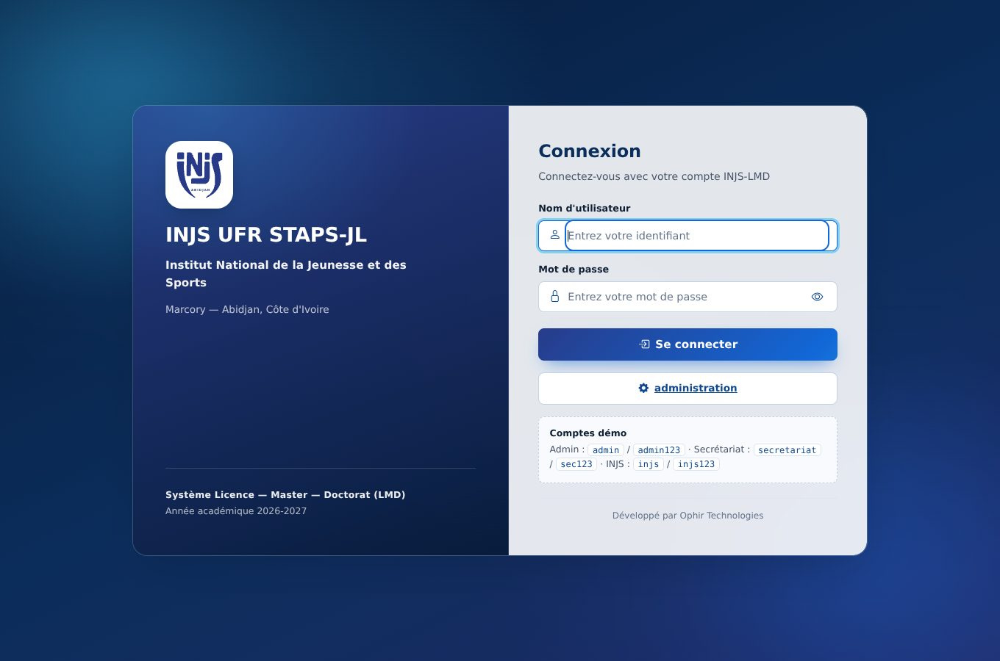
Connexion et sécurité
Se connecter
Profils concernés : Tous les profils
- 1Ouvrez l'adresse de l'application dans votre navigateur.
- 2Saisissez votre nom d'utilisateur dans le premier champ.
- 3Saisissez votre mot de passe dans le second.
- 4Cliquez sur Se connecter.
- 5L'application ouvre votre tableau de bord.
En cas de succès, la barre latérale affiche immédiatement les modules de votre profil. En cas d'échec, un message précise la cause : identifiants incorrects, compte désactivé, ou accès à la plateforme non autorisé pour ce rôle.
Changer de mot de passe
Profils concernés : Tous les profils
Le changement de mot de passe s'effectue depuis le menu de votre compte, en haut à droite.
- 1Cliquez sur votre nom dans la barre supérieure.
- 2Choisissez Profil.
- 3Dans la section mot de passe, saisissez votre mot de passe actuel.
- 4Saisissez le nouveau mot de passe, puis confirmez-le.
- 5Validez : la modification prend effet immédiatement.
Changement obligatoire à la première connexion
Lorsqu'un compte est créé par l'administration, il peut être marqué « changement de mot de passe obligatoire ». Dans ce cas, aucun autre écran n'est accessible tant que le mot de passe n'a pas été modifié : l'application redirige automatiquement vers l'écran dédié.
Sessions et déconnexion
Profils concernés : Tous les profils
Une fois connecté, votre session reste active tant que vous utilisez l'application. Après une période d'inactivité ou à l'expiration du jeton de sécurité, l'application vous invite à vous reconnecter : c'est un comportement normal, non une perte de données.
Pour terminer proprement votre travail, utilisez le menu de votre compte puis Déconnexion. Fermer l'onglet sans se déconnecter laisse la session ouverte sur un poste partagé.
Comprendre les droits d'accès
Profils concernés : Tous les profils
Les droits ne se décident pas au niveau du poste de travail : ils sont portés par le compte. Trois notions doivent être distinguées.
Le rôle
Le rôle désigne la fonction exercée. Il détermine une famille d'écrans et de permissions. Une personne peut exercer plusieurs fonctions : elle cumule alors les droits correspondants.
La permission
La permission est une autorisation précise exprimée sous la forme module.ressource.action — par exemple scolarite.inscription.valider qui autorise la validation d'une inscription. Le catalogue en compte 1 157.
Le périmètre
Le périmètre borne l'effet d'une permission à un sous-ensemble : son secrétariat, sa formation, son parcours, ou son propre dossier. Deux agents ayant la même permission peuvent donc voir des données très différentes.
Opérations sensibles
Profils concernés : Tous les profils
Certaines actions engagent l'institut : elles sont marquées comme sensibles et font l'objet d'un contrôle renforcé. Elles sont journalisées avec l'identité de leur auteur, la date et l'objet.
| Permission | Domaine | Action |
|---|---|---|
administration.attribution.valider | administration | valider |
administration.compte.modifier | administration | modifier |
administration.role.creer | administration | creer |
administration.role.modifier | administration | modifier |
diplomation.diplome.revoquer | diplomation | revoquer |
diplomation.diplome.valider | diplomation | valider |
edt.emploi_du_temps.publier | edt | publier |
evaluations.note.verrouiller | evaluations | verrouiller |
exports.export_sensible.generer | exports | generer |
finances_etud.paiement.valider | finances_etud | valider |
finances_etud.remboursement.valider | finances_etud | valider |
jurys.pv.signer | jurys | signer |
jurys.resultat.publier | jurys | publier |
parametres.parametre.administrer | parametres | administrer |
presences.emargement.forcer | presences | forcer |
Bonnes pratiques
- Ne jamais communiquer un identifiant, même à un supérieur hiérarchique.
- Vérifier l'identité de l'étudiant avant toute opération sur son dossier.
- Contrôler le récapitulatif avant de valider une décision irréversible.
- Signaler immédiatement au service informatique toute action suspecte.
- Se déconnecter de tout poste partagé.
Le parcours des six premières étapes
Profils concernés : Tous les profils
Ce guide condense en six étapes ce qu'un agent doit faire pour être opérationnel. Chaque étape renvoie au chapitre détaillé correspondant. Les six étapes s'enchaînent : aucune ne peut être sautée.
| Étape | Ce que vous faites | Où | Chapitre |
|---|---|---|---|
| 1 | Recevoir vos identifiants et l'adresse de la plateforme | Auprès de l'administrateur | 2.1 |
| 2 | Se connecter et changer le mot de passe initial | Écran de connexion | 2.1 et 2.2 |
| 3 | Identifier son profil et les modules visibles | Barre latérale et tableau de bord | 2.4 |
| 4 | Repérer les écrans de son périmètre | Menu de navigation | Partie IV |
| 5 | Effectuer une première opération de consultation | Écran de liste du module | Partie IV |
| 6 | Savoir où signaler une anomalie | Chapitre d'assistance | Partie XII |
Après la sixième étape
Une fois ces six étapes franchies, l'agent sait se connecter, reconnaître son profil, retrouver un écran et signaler un incident. La suite du manuel détaille, module par module, les opérations de son périmètre.
Administration et gestion des utilisateurs
Le catalogue des rôles
Profils concernés : ADMIN, CHEF_INJS_ADMIN, INJS_ADMIN
Le référentiel des habilitations comporte 81 rôles dont 22 rôles sensibles. Ce catalogue est la référence officielle : il décrit ce que chaque fonction peut faire, indépendamment des personnes nommées.
Administration et direction7 rôles
| Code | Libellé | Niv. | Périmètre | |
|---|---|---|---|---|
ADMIN_SYSTEME | Administrateur système | N4 | INJS_ENTIER | sensible |
DIRECTION_GENERALE | Direction générale | N4 | INJS_ENTIER | sensible |
DIRECTION_ETUDES | Direction des études | N4 | INJS_ENTIER | sensible |
SCOLARITE | Scolarité | N3 | SECRETARIAT | |
RESPONSABLE_PEDAGOGIQUE | Responsable pédagogique | N3 | FORMATION | |
SECRETARIAT_GENERAL | Secrétariat général | N3 | INJS_ENTIER | |
CHEF_DEPARTEMENT | Chef de département | N3 | DIRECTION |
Administration générale et services12 rôles
| Code | Libellé | Niv. | Périmètre | |
|---|---|---|---|---|
GESTIONNAIRE_COURRIERS | Gestionnaire courriers et documents | N2 | SERVICE | |
ARCHIVISTE | Archiviste | N2 | INJS_ENTIER | |
QUALITE_MANAGER | Responsable qualité et audit | N3 | INJS_ENTIER | |
AUDITEUR | Auditeur (qualité / audit) | N1 | INJS_ENTIER | |
AUDIT_READONLY | Audit lecture seule | N1 | INJS_ENTIER | |
PLANIFICATION_MANAGER | Responsable planification | N3 | INJS_ENTIER | |
VIE_ETUDIANTE | Responsable de la vie étudiante | N2 | INJS_ENTIER | |
RESPONSABLE_ADMINISTRATION | Responsable administration et moyens généraux | N3 | INJS_ENTIER | |
ACHATS_MANAGER | Responsable des achats | N3 | INJS_ENTIER | |
LOGISTICIEN | Logisticien | N2 | INJS_ENTIER | |
GED_MANAGER | Responsable GED | N2 | INJS_ENTIER | |
COMMUNICATION_MANAGER | Responsable communication | N2 | INJS_ENTIER |
Candidatures, concours et admissions7 rôles
| Code | Libellé | Niv. | Périmètre | |
|---|---|---|---|---|
AGENT_CANDIDATURE | Agent de candidature | N2 | INJS_ENTIER | |
AGENT_CONTROLE_DOSSIERS | Agent de contrôle des dossiers | N2 | INJS_ENTIER | |
RESPONSABLE_CONCOURS | Responsable concours et sélection | N3 | INJS_ENTIER | sensible |
RESPONSABLE_CANDIDATURES | Responsable des candidatures | N3 | INJS_ENTIER | |
CORRECTEUR_CONCOURS | Correcteur de concours | N2 | PROPRE_COMPTE | |
SURVEILLANT_CONCOURS | Surveillant de concours | N2 | INJS_ENTIER | |
RESPONSABLE_ADMISSIONS | Responsable des admissions | N3 | INJS_ENTIER |
Scolarité4 rôles
| Code | Libellé | Niv. | Périmètre | |
|---|---|---|---|---|
AGENT_ADMISSIONS | Agent admissions | N2 | SECRETARIAT | |
AGENT_INSCRIPTIONS | Agent inscriptions | N2 | SECRETARIAT | |
GESTIONNAIRE_ETUDIANTS | Gestionnaire étudiants | N2 | SECRETARIAT | |
RESPONSABLE_INSCRIPTIONS | Responsable des inscriptions | N3 | INJS_ENTIER |
Pédagogie et organisation des enseignements5 rôles
| Code | Libellé | Niv. | Périmètre | |
|---|---|---|---|---|
RESPONSABLE_FORMATION | Responsable de formation | N3 | FORMATION | |
GESTIONNAIRE_GROUPES | Gestionnaire des groupes | N2 | FORMATION | |
GESTIONNAIRE_COURS | Gestionnaire des cours | N2 | FORMATION | |
GESTIONNAIRE_MAQUETTES | Gestionnaire des maquettes | N3 | FORMATION | |
RESPONSABLE_PARCOURS | Responsable de parcours | N3 | PARCOURS |
Enseignants et charges d'enseignement4 rôles
| Code | Libellé | Niv. | Périmètre | |
|---|---|---|---|---|
ENSEIGNANT | Enseignant | N2 | MODULE_ECUE | |
RESPONSABLE_UE_ECUE | Responsable UE / ECUE | N3 | MODULE_ECUE | |
GESTIONNAIRE_CHARGES | Gestionnaire des charges enseignantes | N2 | FORMATION | |
VACATAIRE | Vacataire | N2 | MODULE_ECUE |
Évaluations et jurys5 rôles
| Code | Libellé | Niv. | Périmètre | |
|---|---|---|---|---|
GESTIONNAIRE_NOTES | Gestionnaire des notes | N2 | FORMATION | |
MEMBRE_JURY | Membre de jury | N2 | FORMATION | |
RESPONSABLE_JURY | Responsable de jury | N4 | FORMATION | sensible |
RESPONSABLE_EVALUATIONS | Responsable des évaluations | N3 | INJS_ENTIER | |
SECRETAIRE_JURY | Secrétaire de jury | N2 | FORMATION |
Diplômation et graduation4 rôles
| Code | Libellé | Niv. | Périmètre | |
|---|---|---|---|---|
RESPONSABLE_GRADUATION | Responsable graduation | N3 | INJS_ENTIER | sensible |
RESPONSABLE_DIPLOMATION | Responsable diplômation | N4 | INJS_ENTIER | sensible |
SIGNATAIRE | Signataire habilité | N3 | INJS_ENTIER | sensible |
VALIDATEUR_DIPLOMES | Validateur des diplômes | N3 | INJS_ENTIER | sensible |
Finances9 rôles
| Code | Libellé | Niv. | Périmètre | |
|---|---|---|---|---|
GESTIONNAIRE_FINANCES_ETUD | Gestionnaire finances étudiantes | N2 | INJS_ENTIER | sensible |
VALIDATEUR_FINANCIER | Validateur financier | N3 | INJS_ENTIER | sensible |
GESTIONNAIRE_VACATIONS | Gestionnaire vacations formateurs | N2 | INJS_ENTIER | sensible |
BOURSE_MANAGER | Responsable des bourses | N3 | INJS_ENTIER | sensible |
RESPONSABLE_FINANCES | Responsable des finances | N4 | INJS_ENTIER | sensible |
COMPTABLE | Comptable | N2 | INJS_ENTIER | |
CAISSIER | Caissier | N2 | INJS_ENTIER | |
RECOUVREMENT | Agent de recouvrement | N2 | INJS_ENTIER | |
CONTROLEUR_FINANCIER | Contrôleur financier | N3 | INJS_ENTIER | sensible |
Ressources humaines4 rôles
| Code | Libellé | Niv. | Périmètre | |
|---|---|---|---|---|
GESTIONNAIRE_RH | Gestionnaire ressources humaines | N3 | INJS_ENTIER | sensible |
RESPONSABLE_RH | Responsable des ressources humaines | N3 | INJS_ENTIER | |
AGENT_RH | Agent RH | N2 | INJS_ENTIER | |
PAIE_MANAGER | Responsable de la paie | N3 | INJS_ENTIER | sensible |
Patrimoine et espaces4 rôles
| Code | Libellé | Niv. | Périmètre | |
|---|---|---|---|---|
GESTIONNAIRE_PATRIMOINE | Gestionnaire du patrimoine | N2 | SITE | |
GESTIONNAIRE_ESPACES | Gestionnaire des espaces | N2 | SITE | |
RESPONSABLE_PATRIMOINE | Responsable du patrimoine | N3 | INJS_ENTIER | |
MAINTENANCE | Agent de maintenance | N2 | INJS_ENTIER |
Stages et conventions3 rôles
| Code | Libellé | Niv. | Périmètre | |
|---|---|---|---|---|
GESTIONNAIRE_STAGES | Gestionnaire des stages | N2 | FORMATION | |
ENCADREUR_STAGE | Encadrant de stage (INJS) | N2 | PROPRE_COMPTE | |
TUTEUR_ENTREPRISE | Tuteur d'entreprise | N1 | PROPRE_COMPTE |
Technique et systèmes d'information10 rôles
| Code | Libellé | Niv. | Périmètre | |
|---|---|---|---|---|
STATISTICIEN | Statisticien | N2 | INJS_ENTIER | |
RECHERCHE_MANAGER | Responsable recherche et innovation | N3 | INJS_ENTIER | |
CHERCHEUR | Chercheur | N2 | PROPRE_COMPTE | |
SUPPORT_IT | Support informatique | N2 | INJS_ENTIER | |
SYSADMIN | Administrateur système | N4 | INJS_ENTIER | sensible |
NETWORK_ADMIN | Administrateur réseau | N3 | INJS_ENTIER | sensible |
DB_ADMIN | Administrateur de base de données | N3 | INJS_ENTIER | sensible |
SECURITY_ADMIN | Administrateur sécurité | N4 | INJS_ENTIER | sensible |
DATA_ANALYST | Analyste de données | N2 | INJS_ENTIER | |
API_MANAGER | Responsable des intégrations | N3 | INJS_ENTIER | sensible |
Destinataires du service3 rôles
| Code | Libellé | Niv. | Périmètre | |
|---|---|---|---|---|
ETUDIANT | Étudiant / auditeur | N1 | PROPRE_COMPTE | |
CANDIDAT | Candidat | N0 | PROPRE_COMPTE | |
CONSULTATION | Consultation restreinte | N1 | INJS_ENTIER |
Créer un compte utilisateur
Profils concernés : ADMIN, CHEF_INJS_ADMIN, INJS_ADMIN
La création de comptes est réservée aux profils disposant de la permission de gestion des comptes. Elle s'effectue depuis Utilisateurs & Accès › Comptes utilisateurs.
- 1Ouvrez Utilisateurs & Accès puis Comptes utilisateurs.
- 2Cliquez sur Nouveau compte.
- 3Renseignez le nom d'utilisateur, le nom, le prénom et l'adresse électronique professionnelle.
- 4Sélectionnez le rôle correspondant à la fonction réelle.
- 5Rattachez le compte à un secrétariat lorsque le rôle l'exige : ce rattachement détermine le périmètre des données visibles.
- 6Activez le compte et validez.
Le compte créé reçoit un mot de passe initial. À la première connexion, l'utilisateur doit le remplacer.
Modifier, désactiver, réactiver
Profils concernés : ADMIN, CHEF_INJS_ADMIN, INJS_ADMIN
Toute modification d'un compte est journalisée. Trois opérations courantes doivent être distinguées.
| Opération | Effet | Réversible ? |
|---|---|---|
| Modifier les informations | Met à jour nom, courriel, rattachement | Oui |
| Désactiver le compte | Interdit toute connexion ; les données restent intactes | Oui |
| Supprimer le compte | Retire l'accès de façon définitive | Non |
En cas de départ ou de mutation, désactivez le compte ; ne le supprimez pas. La conservation du compte préserve l'historique des actions passées, indispensable en cas de contrôle.
Attribuer des rôles et des permissions
Profils concernés : ADMIN, CHEF_INJS_ADMIN, INJS_ADMIN
L'attribution d'un rôle ouvre un ensemble de permissions selon le niveau défini par la matrice. L'attribution est elle-même une opération sensible.
- 1Ouvrez Utilisateurs & Accès › Rôles.
- 2Recherchez le compte concerné.
- 3Ajoutez le rôle souhaité en précisant le périmètre (secrétariat, formation, parcours).
- 4Contrôlez l'écran de synthèse : il liste les permissions réellement accordées.
- 5Validez, puis demandez à l'intéressé de vérifier ses accès.
Délégations
Une délégation permet de transférer temporairement des droits à un autre agent — par exemple pendant un congé. Elle est toujours bornée dans le temps et son échéance est suivie par l'application, qui signale les délégations arrivant à terme.
Contrôler les accès et la traçabilité
Profils concernés : ADMIN, CHEF_INJS_ADMIN, INJS_ADMIN, DIRECTION
Le module Audit & Traçabilité enregistre les actions sensibles et permet de répondre à une question simple : qui a fait quoi, quand, et sur quel objet.
| Écran | Ce qu'il montre |
|---|---|
| Journal d'audit | Toutes les actions sensibles, avec auteur et horodatage |
| Actions utilisateurs | Les opérations effectuées par un compte donné |
| Modifications | Les changements de valeurs, avant et après |
| Événements de sécurité | Connexions, échecs de connexion, changements de mot de passe |
| Intégrité de la chaîne | Contrôle de non-altération des enregistrements |
| Archives d'audit | Les journaux clôturés, conservés |
Ces écrans sont accessibles depuis la section Audit & Traçabilité de la barre latérale, selon les droits du profil.
Référentiels et formations LMD
Comprendre l'architecture LMD
Profils concernés : ADMIN, DIRECTION, SUPERVISEUR, CHEF_SECRETARIAT
L'INJS organise ses enseignements selon le système Licence-Master-Doctorat. Cette architecture n'est pas décorative : elle conditionne le calcul des crédits, la progression des étudiants et la délivrance des diplômes.
| Cycle | Niveaux | Semestres | Crédits |
|---|---|---|---|
| Licence | L1 à L3 | S1 à S6 | 180 ECTS |
| Master | M1 et M2 | S7 à S10 | 120 ECTS |
Les règles structurantes
- Un semestre vaut 30 crédits ECTS.
- Une année (deux semestres) vaut 60 crédits ECTS.
- Chaque unité d'enseignement (UE) regroupe un ou plusieurs éléments constitutifs (ECUE).
- Chaque ECUE porte un volume horaire (CM, TD, TP) et des crédits.
- Une maquette pédagogique fixe, pour une formation et un niveau, la liste des UE et leur répartition par semestre.
Le catalogue des référentiels
Profils concernés : ADMIN, DIRECTION, SUPERVISEUR
La section Référentiels de la barre latérale rassemble les nomenclatures qui alimentent tout le reste de l'application. Les données y sont regroupées par famille.
| Famille | Contenu |
|---|---|
| Référentiels institutionnels | Mentions, écoles, entités rattachées |
| Offre de formation | Filières, niveaux, parcours, semestres |
| Système LMD | Niveaux, parcours, semestres, UE et ECUE |
| Référentiels pédagogiques | Types d'enseignement, d'espace, d'évaluation, de décision |
| Ressources humaines pédagogiques | Grades enseignants |
| Organisation pédagogique | Statuts, bâtiments, salles, sites, vagues |
| Administratif et scolarité | Modèles de paiement, types de document et de notification, années académiques |
Construire une maquette pédagogique
Profils concernés : SUPERVISEUR, CHEF_SECRETARIAT, ADMIN
La maquette est le document de référence d'une formation : elle liste les UE par semestre, avec leurs crédits et volumes horaires.
- 1Ouvrez Scolarité › Maquettes LMD.
- 2Choisissez la formation et le niveau concernés.
- 3Créez la maquette ou ouvrez celle à réviser.
- 4Ajoutez les UE une à une, en précisant le semestre et les crédits.
- 5Pour chaque UE, ajoutez ses ECUE avec leurs volumes horaires.
- 6Vérifiez le total des crédits par semestre : il doit atteindre 30.
- 7Enregistrez, puis contrôlez la synthèse proposée par l'application.
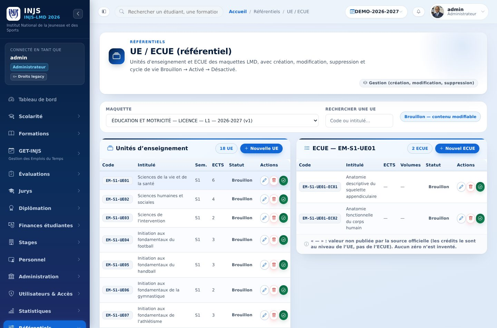
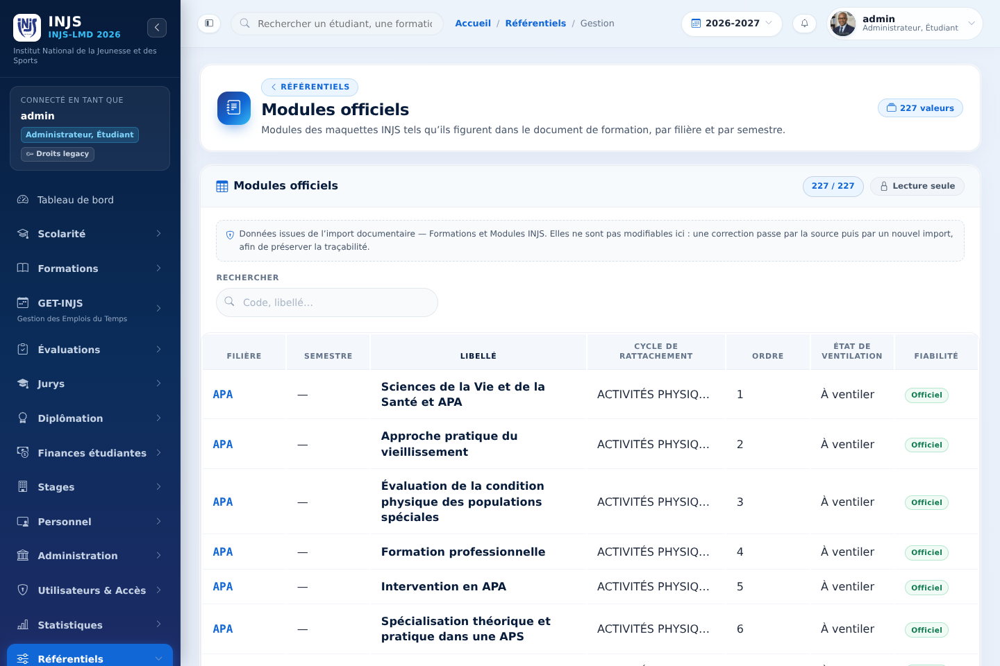
Gérer les référentiels courants
Profils concernés : ADMIN, SUPERVISEUR, CHEF_SECRETARIAT
Les écrans de référentiel partagent la même logique : une liste filtrable, un formulaire de création, une fiche de modification et une action de suppression protégée.
- 1Ouvrez le référentiel souhaité depuis la barre latérale.
- 2Utilisez la recherche et les filtres pour trouver une entrée.
- 3Cliquez sur Nouveau pour créer, ou sur une ligne pour modifier.
- 4Renseignez les champs : ceux marqués d'un astérisque sont obligatoires.
- 5Validez avec Enregistrer.
- 6Contrôlez que la ligne apparaît dans la liste avec l'état attendu.
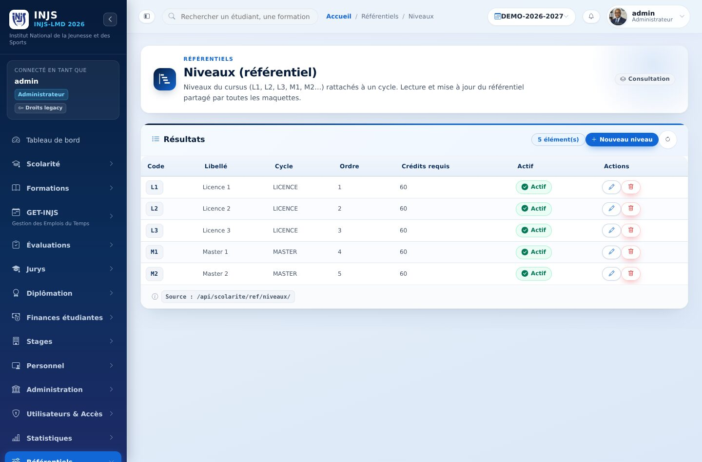
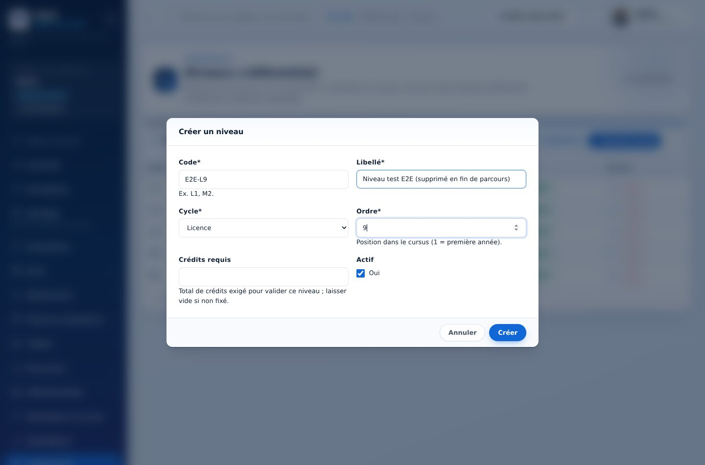
Quand la suppression est refusée
Une entrée référencée par des données métier ne peut pas être supprimée : l'application le refuse et indique ce qui la retient. Utilisez alors la désactivation, qui conserve l'historique.
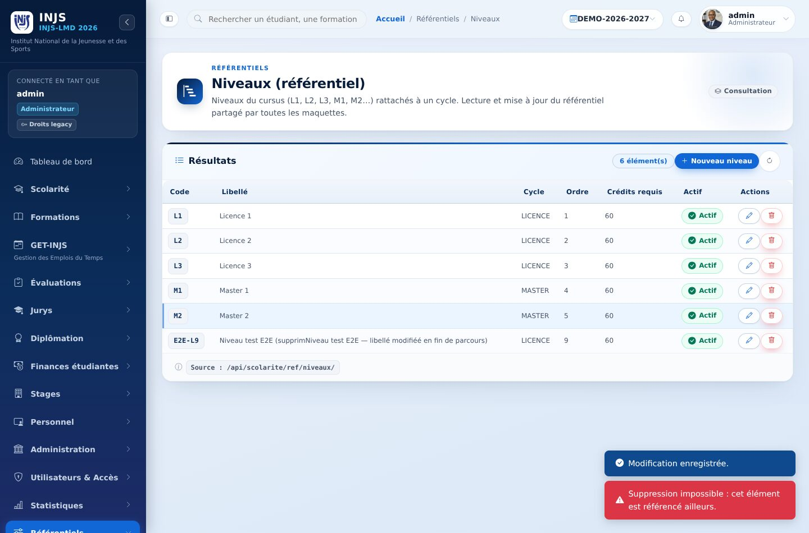
Admissions et scolarité
Les cinq étapes à ne pas confondre
Profils concernés : SECRETARIAT, CHEF_SECRETARIAT, ADMIN
Le parcours d'un étudiant, de sa candidature à sa vie académique, se déroule en cinq opérations distinctes. Les confondre est la première source d'erreur constatée en exploitation.
| Étape | Ce qu'elle signifie | Qui la réalise |
|---|---|---|
| 1. Admission | Le candidat est déclaré admis à la suite du concours ou de l'examen du dossier | Responsable des admissions |
| 2. Inscription administrative | L'admission devient un dossier d'étudiant rattaché à une formation et une année | Secrétariat |
| 3. Validation de l'inscription | L'inscription est contrôlée et validée ; elle devient définitive | Chef de secrétariat ou responsable des inscriptions |
| 4. Parcours académique | L'étudiant est rattaché à un niveau, un parcours et un groupe | Secrétariat / responsable pédagogique |
| 5. Inscription pédagogique | L'étudiant est inscrit aux UE et ECUE de son semestre | Secrétariat / responsable pédagogique |
Instruire les candidatures
Profils concernés : SECRETARIAT, CHEF_SECRETARIAT, ADMIN
Les candidatures arrivent par campagne. Chaque campagne définit la formation visée, la période et les pièces exigées.
- 1Ouvrez Scolarité › Candidatures.
- 2Filtrez par campagne, formation et statut.
- 3Cliquez sur une candidature pour ouvrir le dossier.
- 4Contrôlez les pièces justificatives reçues.
- 5Renseignez l'avis d'instruction et enregistrez.
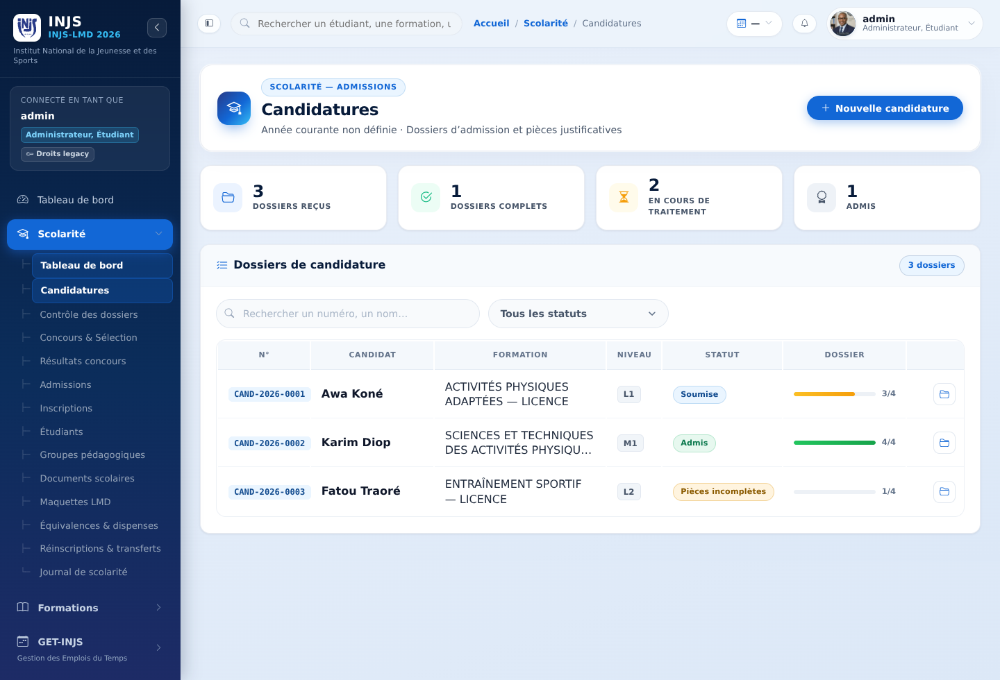
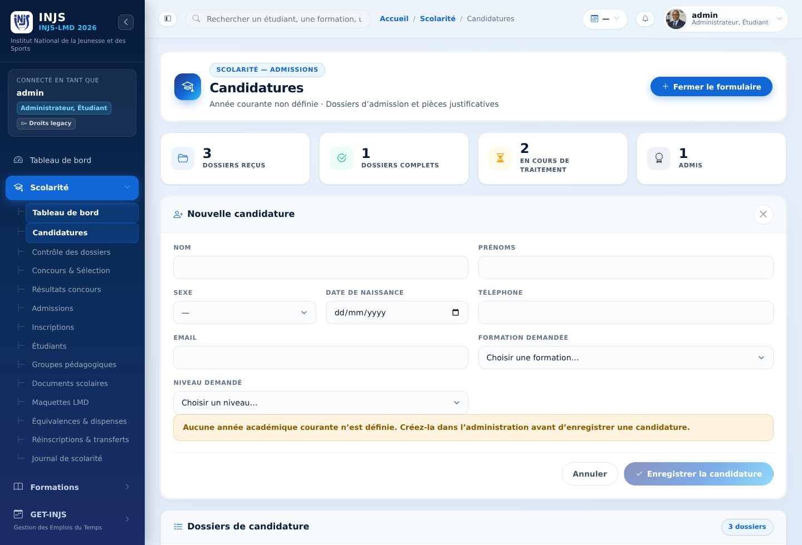
Le contrôle des dossiers
Le contrôle est une étape séparée de la saisie, assurée par un agent distinct. L'application interdit de cumuler saisie et contrôle sur un même compte : c'est la règle de séparation des tâches.
Depuis Scolarité › Contrôle des dossiers, chaque pièce peut être validée ou rejetée, avec un motif. Un rejet notifie le candidat et suspend l'instruction jusqu'à régularisation.
Inscrire un étudiant
Profils concernés : SECRETARIAT, CHEF_SECRETARIAT
L'inscription administrative crée le dossier de l'étudiant dans l'année académique en cours.
- 1Ouvrez Scolarité › Inscriptions.
- 2Recherchez l'étudiant : par nom, prénom ou numéro de dossier.
- 3Si l'étudiant est nouveau, créez sa fiche depuis cet écran.
- 4Choisissez la formation, le niveau et l'année académique.
- 5Vérifiez les pièces obligatoires et la situation financière.
- 6Enregistrez : l'inscription passe à l'état en attente de validation.
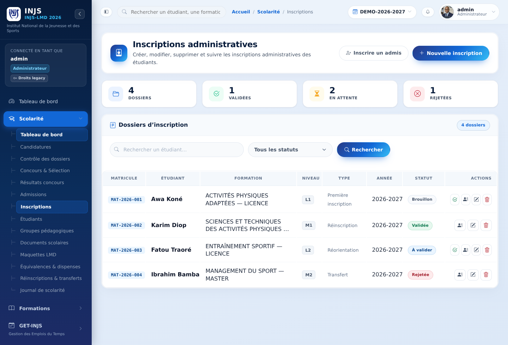
Documents scolaires et réinscriptions
Profils concernés : SECRETARIAT, CHEF_SECRETARIAT, ARCHIVE
Une fois l'inscription validée, les documents officiels peuvent être produits depuis Scolarité › Documents scolaires : attestations d'inscription, certificats de scolarité, relevés.
La réinscription reconduit un étudiant d'une année sur l'autre, en conservant son parcours. Elle se traite depuis Scolarité › Réinscriptions & transferts.
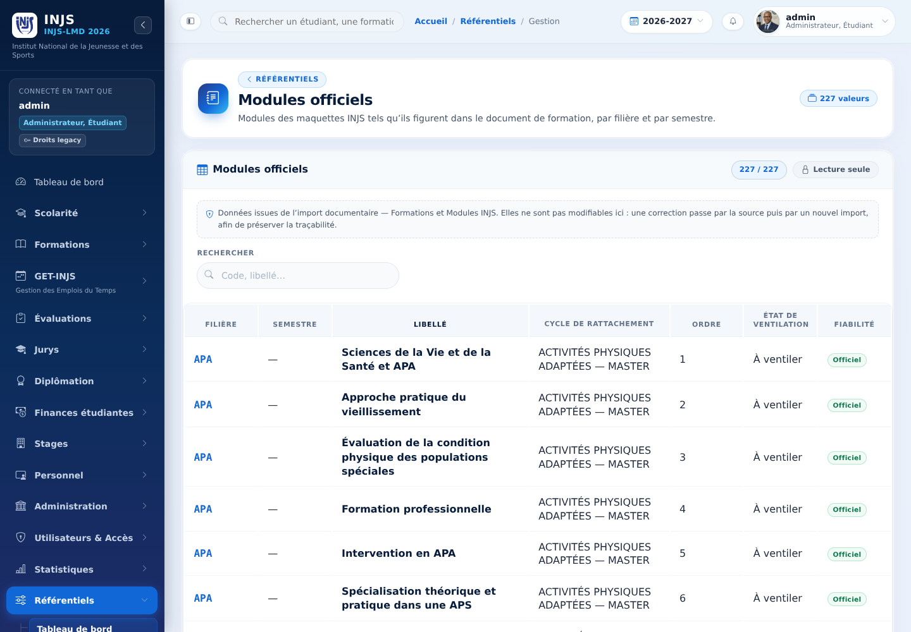
Le journal de scolarité
Toutes les opérations sur un dossier sont consignées dans le Journal de scolarité. En cas de contestation d'un étudiant, c'est la source de vérité : elle indique qui a fait quoi et quand.
Pédagogie et emplois du temps (GET-INJS)
Le module GET-INJS APP
Profils concernés : SUPERVISEUR, ADMIN, CHEF_SECRETARIAT
Le module GET INJS APP regroupe la planification pédagogique : emplois du temps, génération, dimensionnement, salles, disponibilités et contrôle des conflits. C'est le cœur opérationnel de l'organisation des enseignements.
| Écran | Usage |
|---|---|
| Tableau de bord | Vue d'ensemble de la planification |
| Emplois du temps | Consultation et édition des emplois du temps |
| Génération | Calcul annuel des emplois du temps |
| Dimensionnement | Vérification des volumes et des effectifs |
| Import étudiants | Chargement des étudiants inscrits |
| Étudiants inscrits | Contrôle de la population à planifier |
| Référentiels | Nomenclatures utilisées par la planification |
| Conception | Construction manuelle d'un emploi du temps |
| Salles & espaces | Capacités et affectations |
| Disponibilités | Indisponibilités des enseignants et des salles |
| Conflits & contraintes | Détection et résolution des conflits |
| Export / Impression | Édition des emplois du temps |
Élaborer un emploi du temps
Profils concernés : SUPERVISEUR, ADMIN
L'élaboration se fait en trois temps : préparer les données, générer une proposition, puis valider et publier.
1. Préparer les données
- 1Vérifiez que les étudiants inscrits sont chargés et complets.
- 2Contrôlez le dimensionnement : volumes horaires et effectifs.
- 3Renseignez les disponibilités des enseignants et des salles.
- 4Vérifiez le référentiel des salles : capacité et équipement.
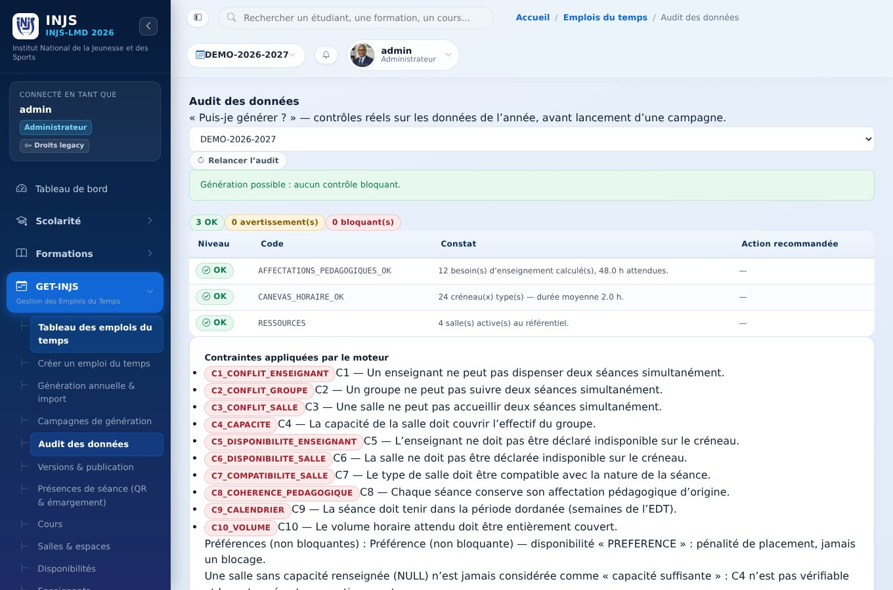
2. Générer une proposition
- 1Ouvrez GET INJS APP › Génération.
- 2Sélectionnez l'année académique et le périmètre à planifier.
- 3Choisissez les contraintes à appliquer.
- 4Lancez la génération et attendez la fin du calcul.
- 5Examinez le résultat et la liste des conflits résiduels.
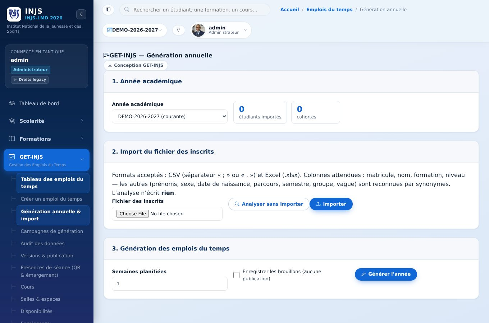
3. Contrôler les conflits
L'écran Conflits & contraintes liste les incompatibilités détectées : un même enseignant sur deux séances simultanées, une salle doublement réservée, un groupe sureffectif.
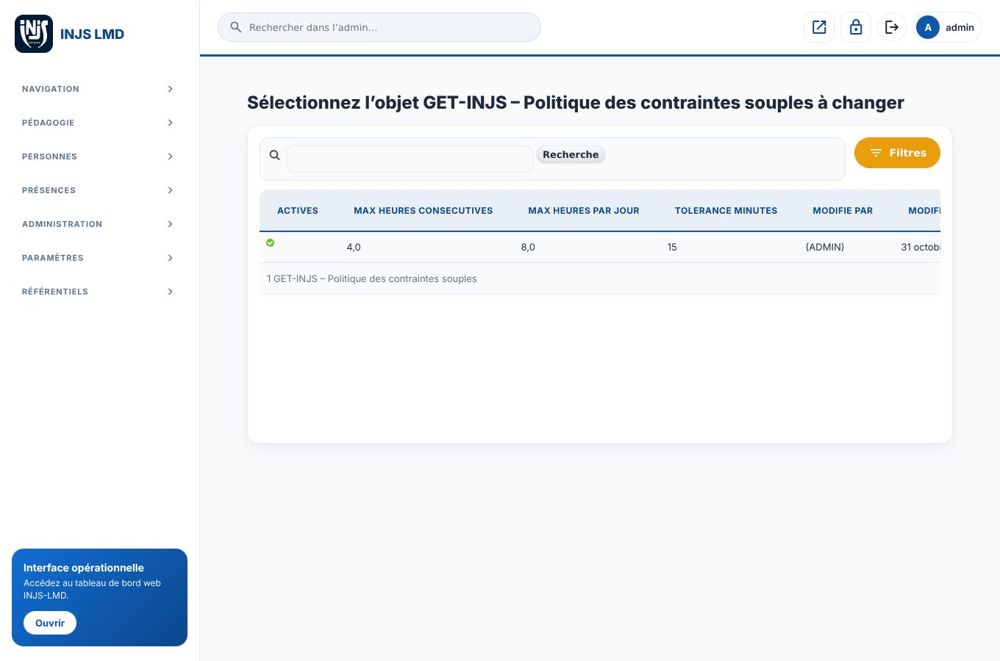
4. Publier
La publication rend l'emploi du temps visible des enseignants et des étudiants. Elle constitue une opération sensible, réservée aux profils habilités, et elle est journalisée.
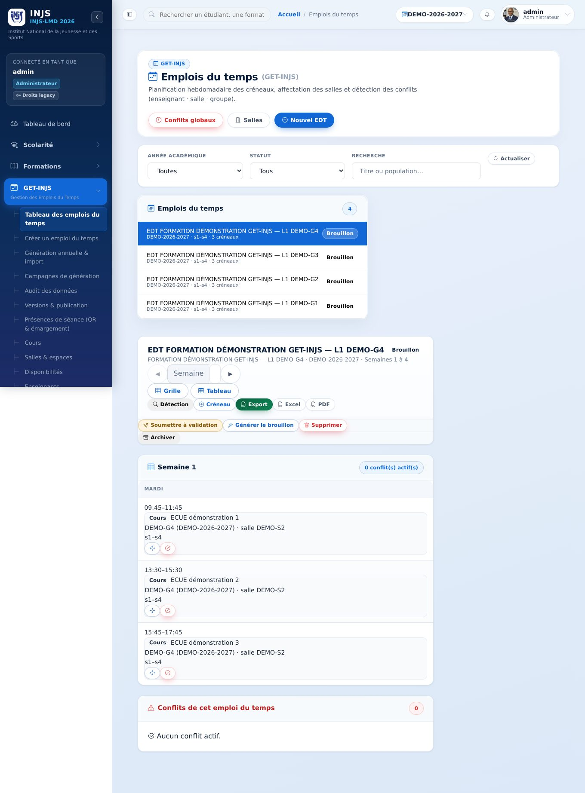
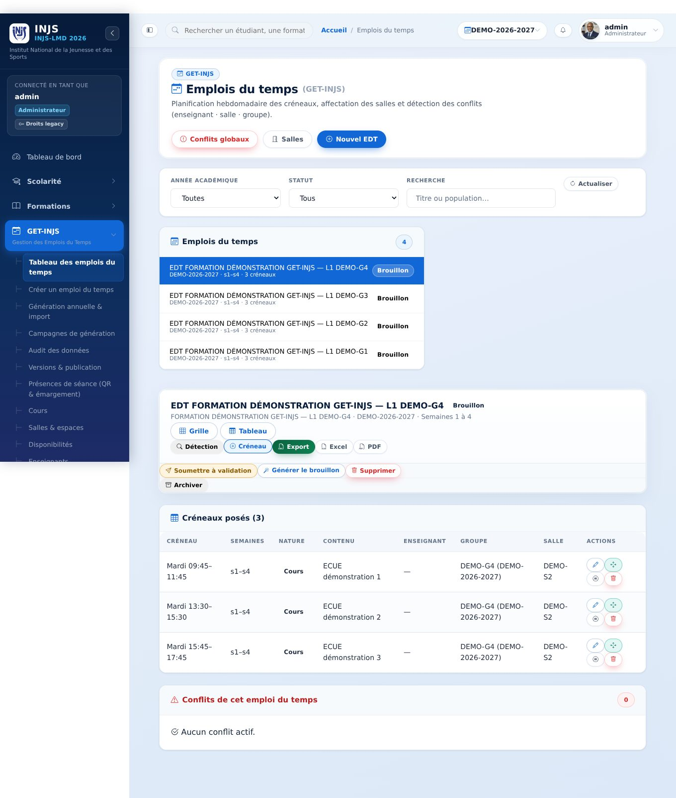
Modifier, rattraper, exporter
Profils concernés : SUPERVISEUR, ADMIN
Toute modification d'un emploi du temps publié doit être motivée : elle impacte les enseignants et les étudiants déjà informés.
- Séance déplacée : modifiez le créneau, puis republiez.
- Rattrapage : créez une séance supplémentaire rattachée à l'emploi du temps existant.
- Annulation : supprimez la séance en conservant la trace du motif.
- Export : générez le document depuis Export / Impression.
Présences et suivi des séances
Enregistrer les présences
Profils concernés : ENCADRANT, SECRETARIAT, SUPERVISEUR
La présence est enregistrée séance par séance. Trois canaux sont possibles : le badgeage par QR code depuis le téléphone de l'étudiant, l'émargement manuel par l'enseignant, et la correction par le secrétariat.
- 1Ouvrez Présences QR › Séances.
- 2Sélectionnez la séance concernée : elle apparaît à sa date et à son horaire.
- 3Ouvrez la séance en direct pour suivre le badgeage.
- 4Si nécessaire, procédez à l'émargement manuel pour les étudiants présents sans badge.
- 5Clôturez la séance une fois l'émargement terminé.
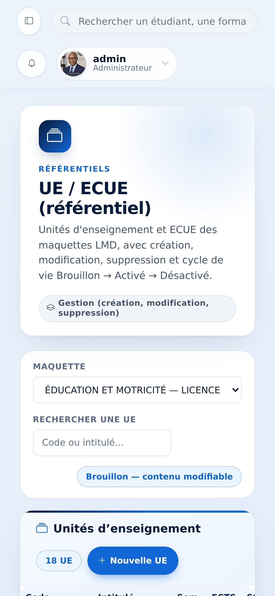
Les statuts de présence
| Statut | Signification |
|---|---|
| Présent | L'étudiant a badgé dans les délais |
| Retard | Badgeage effectué après le seuil de tolérance |
| Absent | Aucun badgeage enregistré |
| Absence justifiée | Absence documentée et acceptée |
| Excusé | Absence couverte par une dispense |
| Non renseigné | Statut non encore déterminé |
La règle de calcul du taux de présence
Profils concernés : Tous les profils
Le taux de présence mesure l'assiduité réelle à une séance. La règle appliquée par l'application est la suivante :
Un étudiant en retard compte donc comme présent dans le calcul du taux. Les retards restent néanmoins affichés comme indicateur distinct, afin de suivre la ponctualité séparément de l'assiduité.
Le taux n'est calculé que si l'effectif attendu est connu et supérieur à zéro. Dans le cas contraire, l'application affiche « non calculable » plutôt qu'un chiffre faux.
Justifications et corrections
Une absence peut être justifiée a posteriori depuis le registre. La correction est journalisée : l'ancien statut, le nouveau et l'identité de l'auteur sont conservés.
Badgeage QR et géolocalisation
Profils concernés : ENCADRANT, SECRETARIAT, ADMIN
Le badgeage s'appuie sur une application mobile dédiée. L'étudiant scanne le QR code affiché par l'enseignant ; l'application enregistre l'heure et, lorsque le dispositif est actif, la position.
- Le jeton QR n'est valable que pendant la séance.
- Un badgeage hors de la zone autorisée est signalé comme anomalie.
- La tolérance de retard est paramétrable par le service.
- Les badgeages manuels sont identifiés comme tels dans le registre.
Évaluations, jurys et diplômation
Saisir et contrôler les notes
Profils concernés : ENCADRANT, SUPERVISEUR, SECRETARIAT
La saisie des notes est ouverte à l'enseignant responsable de l'ECUE et au secrétariat. Elle suit un circuit contrôlé : saisie, contrôle, verrouillage, puis délibération.
- 1Ouvrez Évaluations › Saisie des notes.
- 2Sélectionnez la formation, le niveau, le semestre et l'ECUE.
- 3Saisissez les notes étudiant par étudiant.
- 4Enregistrez : les notes passent à l'état saisi.
- 5Contrôlez la cohérence depuis Contrôle des notes.
- 6Le responsable procède au verrouillage, qui interdit toute modification ultérieure non autorisée.
Le contrôle des notes
L'écran Contrôle des notes signale les anomalies détectables : notes manquantes, valeurs hors barème, écarts entre le nombre d'étudiants attendus et le nombre de notes saisies.
Délibérations et jurys
Profils concernés : SUPERVISEUR, DIRECTION, ADMIN
Le jury délibère à partir des résultats calculés. L'application ne décide pas à sa place : elle produit les moyennes, applique les règles de passage et propose des décisions que le jury confirme ou modifie.
| Étape | Écran | Ce qui se passe |
|---|---|---|
| Composition | Jurys › Composition | Désignation des membres du jury |
| Délibération | Jurys › Délibérations | Examen des résultats et décisions |
| Procès-verbal | Jurys › PV | Rédaction et signature du PV |
| Validation | Jurys › Validation | Validation officielle des décisions |
Les décisions possibles
- Admis : l'étudiant valide son année ou son semestre.
- Admis avec dette : validation partielle, avec ECUE à repasser.
- Redoublant : l'année n'est pas validée.
- Ajourné : résultats insuffisants, décision différée.
- Exclu : décision d'exclusion prononcée par le jury.
Diplômes, attestations et relevés
Profils concernés : DIRECTION, SECRETARIAT, ARCHIVE
Après validation des délibérations, les documents officiels peuvent être établis depuis le module Diplômation.
| Écran | Document produit |
|---|---|
| Éligibilité | Liste des étudiants remplissant les conditions de diplomation |
| Diplômes | Diplômes définitifs, après validation |
| Attestations | Attestations de réussite ou de scolarité |
| Certificats | Certificats de scolarité et de radiation |
| Registres & modèles | Registres officiels et modèles de documents |
Archivage
Les listes de notes et cahiers d'appel clôturés sont conservés dans Archives. Ces documents sont consultables en lecture seule : ils constituent la preuve des résultats d'une année révolue.
Ressources humaines et enseignants
Gérer les enseignants et le personnel
Profils concernés : ADMIN, SECRETARIAT, SUPERVISEUR
Le module Personnel rassemble les fiches des enseignants et des agents administratifs, leurs affectations et leurs charges.
| Écran | Usage |
|---|---|
| Enseignants | Fiches des enseignants et formateurs |
| Personnel administratif | Fiches des agents |
| Affectations | Rattachement aux services et départements |
| Charges / volumes horaires | Répartition des enseignements |
| Disponibilités agents | Indisponibilités déclarées |
| Documents RH | Pièces administratives et contrats |
Charges d'enseignement et vacations
Profils concernés : ADMIN, SUPERVISEUR, FINANCE
Les heures effectuées par les enseignants sont suivies dans Affectations pédagogiques et Charges / volumes horaires.
La rémunération des vacations se consulte depuis Finances étudiantes › Vacations & encadrants. Le calcul s'appuie sur les heures réellement validées, non sur les heures planifiées.
Finances et gestion administrative
Frais, factures et paiements
Profils concernés : FINANCE, ADMIN, DIRECTION
Le module Finances étudiantes couvre l'ensemble du cycle financier : définition des frais, émission des factures, enregistrement des paiements, édition des reçus.
| Écran | Usage |
|---|---|
| Vue d'ensemble | Synthèse de la situation financière |
| Frais de scolarité | Définition des montants par formation et niveau |
| Factures | Émission et suivi des factures |
| Paiements | Enregistrement des règlements |
| Reçus | Édition des justificatifs de paiement |
| Bourses & remboursements | Gestion des aides et des remboursements |
| Situation financière | Position d'un étudiant |
| Vacations & encadrants | Rémunération des intervenants |
| Paramétrage finance | Modes de paiement et règles de calcul |
Le circuit de validation
La saisie et la validation d'un paiement sont deux opérations distinctes, confiées à des profils différents. Le validateur financier ne saisit pas ; le caissier saisit mais ne valide pas.
Courriers, réunions et archives
Profils concernés : SECRETARIAT, ARCHIVE, ADMIN
Le module Administration couvre la gestion documentaire institutionnelle.
- Courrier / Documents : enregistrement du courrier arrivé et départ, affectation aux services.
- Réunions & missions : ordres du jour, comptes rendus, ordres de mission.
- Archives : conservation et consultation des documents clos.
- Listes de notes archivées et cahiers d'appel archivés : consultation en lecture seule.
Autres modules
Stages et conventions
Profils concernés : ADMIN, SUPERVISEUR, SECRETARIAT
Le module Stages suit le parcours de stage des étudiants, depuis la convention jusqu'à l'évaluation finale.
| Écran | Usage |
|---|---|
| Conventions | Établissement et suivi des conventions de stage |
| Structures d'accueil | Répertoire des organismes partenaires |
| Affectations & tuteurs | Rattachement étudiant / structure / tuteur |
| Suivi des stages | Avancement et visites |
| Évaluations | Notes de stage et appréciations |
Statistiques et tableaux de bord
Profils concernés : DIRECTION, ADMIN, STATISTICIEN
Le module Statistiques produit les indicateurs de pilotage de l'institut. Chaque écran correspond à un thème d'analyse.
| Écran | Indicateurs |
|---|---|
| Candidatures | Volumes par campagne, formation et statut |
| Admissions | Taux d'admission et profils des admis |
| Inscriptions | Effectifs inscrits par formation et niveau |
| Effectifs | Répartition par genre, origine et statut |
| Résultats | Taux de réussite par formation et semestre |
| Finances | Recettes, impayés et taux de recouvrement |
| Rapports | Rapports consolidés et exports |
| Alertes & seuils | Dépassements des seuils configurés |
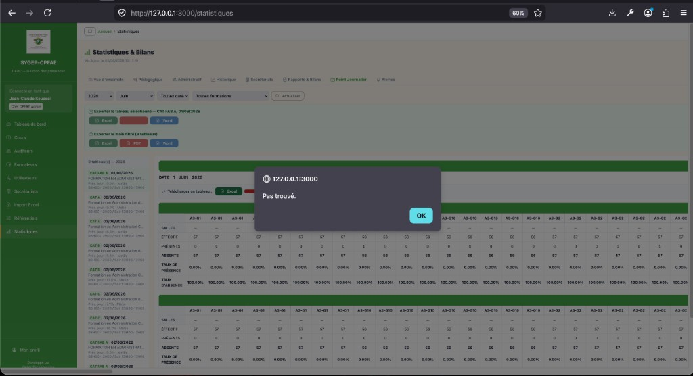
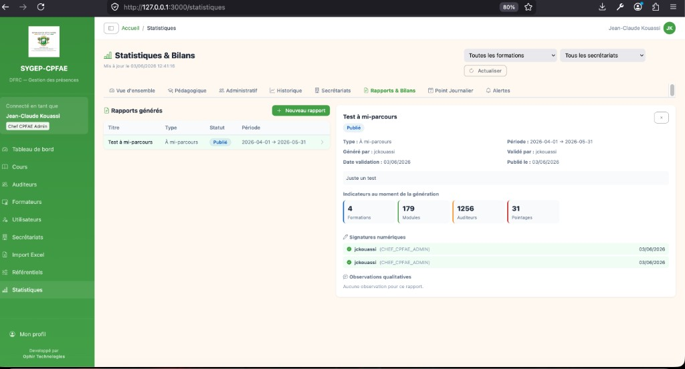
Patrimoine et espaces
Profils concernés : ADMIN, DIRECTION
Le module Patrimoine recense les biens, les espaces et leurs réservations. Il alimente la planification des salles.
Les écrans Salles & espaces du module GET-INJS s'appuient sur ce référentiel : une salle non enregistrée ne peut pas être affectée à une séance.
Exports et paramètres
Profils concernés : ADMIN, DIRECTION
Le module Exports de données permet de produire des fichiers exploitables (tableurs) à partir des données de l'application. Les exports sensibles sont réservés et journalisés.
Le module Paramètres généraux regroupe les réglages transverses : fonctionnalités activables, politique de sécurité, paramètres de badgeage.
Assistance et résolution des problèmes
Difficultés de connexion
Profils concernés : Tous les profils
Le message « identifiants incorrects » s'affiche alors que le mot de passe semble correct.
- Cause probable
- Erreur de saisie (majuscules, clavier), ou mot de passe réinitialisé par l'administration.
- Vérification
- Vérifiez le verrouillage des majuscules et essayez de saisir le mot de passe dans un champ texte pour le relire.
- Solution
- Réessayez. Si l'échec persiste, demandez la réinitialisation à l'administrateur.
- Contact
- Administrateur de la plateforme
Le message « accès non autorisé » apparaît.
- Cause probable
- Votre rôle ne dispose pas de l'accès web — cas des profils Formateur et Étudiant.
- Vérification
- Demandez à l'administrateur quel rôle est réellement rattaché à votre compte.
- Solution
- Utilisez l'application mobile. Si un accès web est nécessaire, l'administrateur doit attribuer le rôle correspondant.
- Contact
- Administrateur de la plateforme
L'application renvoie sans cesse à l'écran de changement de mot de passe.
- Cause probable
- Le compte est marqué « changement obligatoire ».
- Vérification
- Aucune : c'est le comportement attendu.
- Solution
- Changez le mot de passe ; l'accès normal est rétabli immédiatement après.
- Contact
- —
Difficultés d'utilisation
Profils concernés : Tous les profils
Un module est absent de la barre latérale.
- Cause probable
- Le rôle du compte ne donne pas accès à ce module.
- Vérification
- Consultez votre fiche de profil dans ce manuel.
- Solution
- Si l'accès est légitime, l'administrateur doit attribuer le rôle ; sinon, sollicitez un collègue habilité.
- Contact
- Administrateur de la plateforme
Un bouton est visible mais son clic échoue.
- Cause probable
- Le bouton est visible mais la permission précise manque au périmètre du compte.
- Vérification
- Notez le message exact affiché par l'application.
- Solution
- Transmettez le message à l'administrateur : il indique précisément la permission manquante.
- Contact
- Administrateur de la plateforme
Une donnée attendue est introuvable.
- Cause probable
- Filtres actifs, ou donnée hors de votre périmètre.
- Vérification
- Réinitialisez les filtres et vérifiez l'année académique sélectionnée.
- Solution
- Si la donnée reste introuvable, vérifiez qu'elle existe bien dans le périmètre de votre service.
- Contact
- Responsable de votre service
Une validation échoue sans explication claire.
- Cause probable
- Une règle métier bloque l'opération (pièce manquante, état incompatible, dépendance).
- Vérification
- Lisez le message : il nomme généralement l'élément bloquant.
- Solution
- Corrigez l'élément signalé, puis relancez l'opération.
- Contact
- Administrateur de la plateforme
Difficultés techniques
Profils concernés : Tous les profils
La session expire pendant le travail.
- Cause probable
- Inactivité prolongée ou jeton de sécurité expiré.
- Vérification
- Aucune : comportement normal de sécurité.
- Solution
- Reconnectez-vous. Enregistrez régulièrement pour ne rien perdre.
- Contact
- —
Un export produit un fichier vide ou incomplet.
- Cause probable
- Aucune donnée ne correspond aux filtres, ou l'export a été interrompu.
- Vérification
- Vérifiez le nombre de lignes affichées à l'écran avant l'export.
- Solution
- Élargissez les filtres puis relancez l'export.
- Contact
- Administrateur de la plateforme
La génération d'un emploi du temps échoue.
- Cause probable
- Données d'entrée incomplètes : volumes horaires, effectifs, salles ou disponibilités.
- Vérification
- Consultez l'écran Audit des données : il liste les anomalies bloquantes.
- Solution
- Complétez les référentiels manquants, puis relancez.
- Contact
- Responsable pédagogique
Un badgeage n'est pas reconnu.
- Cause probable
- QR code expiré, hors zone, ou séance déjà clôturée.
- Vérification
- Contrôlez l'heure du badgeage et l'état de la séance.
- Solution
- L'enseignant peut procéder à un émargement manuel, tracé comme tel.
- Contact
- Enseignant de la séance
La page affiche une erreur bloquante.
- Cause probable
- Incident passager ou défaut de chargement.
- Vérification
- Rechargez la page.
- Solution
- Si l'erreur persiste, notez le message et l'heure, puis signalez-le.
- Contact
- Service informatique
Fiches par profil utilisateur
Chaque fiche décrit une fonction telle qu'elle est réellement outillée : présentation, navigation, autorisations, cas pratiques et erreurs fréquentes. Les fiches des profils sans accès web sont conservées : elles expliquent pourquoi l'accès est refusé et quelles applications utiliser.
Administrateur
Administrateur système / Chef de service informatique
A. Présentation
Accès complet à la plateforme. Crée les comptes, attribue les rôles, configure les paramètres et contrôle la traçabilité. N'intervient pas sur les décisions métier (notes, jurys, finances).
B. Navigation
Sections du menu réellement visibles pour ce profil, avec leurs écrans et leur adresse.
C. Autorisations
Actions autorisées
- Accès web
- Accès opérationnel
- Gestion des comptes
- Périmètre global
- Gestion des questionnaires
- Gestion des notes
- Validation des décisions
- Consultation des évaluations
Actions interdites
- —
D. Cas pratiques
Créer un compte pour un nouvel agent de scolarité
Le service scolarité accueille un agent. Il doit saisir les inscriptions du secrétariat Sciences et Techniques des Activités Physiques et Sportives.
- Utilisateurs & Accès › Comptes utilisateurs › Nouveau compte
- Renseigner l'identité et le courriel professionnel
- Rôle : Secrétariat · Rattachement : le secrétariat concerné
- Valider, puis demander à l'agent de changer son mot de passe à la première connexion
Vérifier qui a modifié une note
Un étudiant conteste une note modifiée après délibération.
- Audit & Traçabilité › Modifications
- Filtrer par ECUE et par période
- Identifier l'auteur, l'horodatage et les valeurs avant/après
- Exporter la trace pour constitution du dossier
E. Erreurs fréquentes
Chef INJS Admin
Chef du service administration
A. Présentation
Supervision administrative élargie. Cumule les habilitations de l'administrateur et de la direction des études.
B. Navigation
Sections du menu réellement visibles pour ce profil, avec leurs écrans et leur adresse.
C. Autorisations
Actions autorisées
- Accès web
- Accès opérationnel
- Gestion des comptes
- Périmètre global
- Gestion des questionnaires
- Gestion des notes
- Validation des décisions
- Consultation des évaluations
Actions interdites
- —
D. Cas pratiques
Superviser la clôture d'une année académique
Fin d'année : le chef du service administration contrôle la cohérence globale.
- Statistiques › Effectifs : contrôler les inscrits par formation
- Scolarité › Journal de scolarité : vérifier les opérations de masse
- Évaluations › Résultats : s'assurer que toutes les notes sont verrouillées
- Jurys › Validation : contrôler que les délibérations sont validées
- Diplômation › Éligibilité : examiner la liste des diplômables
E. Erreurs fréquentes
—
INJS Admin
Responsable administratif
A. Présentation
Gestion opérationnelle des dossiers, des inscriptions et des référentiels. Même périmètre applicatif que l'administrateur système, avec les responsabilités métier de la scolarité.
B. Navigation
Sections du menu réellement visibles pour ce profil, avec leurs écrans et leur adresse.
C. Autorisations
Actions autorisées
- Accès web
- Accès opérationnel
- Gestion des comptes
- Périmètre global
- Gestion des questionnaires
- Gestion des notes
- Validation des décisions
- Consultation des évaluations
Actions interdites
- —
D. Cas pratiques
Contrôler la cohérence des maquettes
Avant la rentrée, l'administration vérifie les maquettes LMD.
- Scolarité › Maquettes LMD
- Ouvrir chaque maquette par formation et niveau
- Contrôler le total de crédits par semestre (30 ECTS)
- Vérifier les volumes horaires des ECUE
- Corriger ou faire corriger les écarts
E. Erreurs fréquentes
Direction
Direction générale de l'INJS
A. Présentation
Pilotage de l'institut. Consultation transversale, décision sur la diplomation et les statistiques. Aucun acte de saisie courante.
B. Navigation
Sections du menu réellement visibles pour ce profil, avec leurs écrans et leur adresse.
C. Autorisations
Actions autorisées
- Accès web
- Accès opérationnel
- Périmètre global
- Validation des décisions
- Consultation des évaluations
Actions interdites
- Saisir une note
- Enregistrer un paiement
- Créer un compte utilisateur
- Modifier une maquette
D. Cas pratiques
Suivre les effectifs de la rentrée
La direction souhaite un point d'étape sur les inscriptions à la rentrée.
- Statistiques › Inscriptions
- Sélectionner l'année académique en cours
- Comparer par formation et par niveau
- Exporter le rapport pour le conseil de direction
Valider la liste des diplômés
Le jury a délibéré ; la direction doit autoriser l'édition des diplômes.
- Diplômation › Éligibilité
- Contrôler la liste proposée
- Vérifier que les délibérations sont validées
- Autoriser l'édition depuis Diplômes
E. Erreurs fréquentes
Chef de secrétariat
Responsable d'un secrétariat pédagogique
A. Présentation
Encadre une équipe de secrétariat. Saisit, modifie et valide les actes de scolarité de son périmètre.
B. Navigation
Sections du menu réellement visibles pour ce profil, avec leurs écrans et leur adresse.
C. Autorisations
Actions autorisées
- Accès web
- Accès opérationnel
- Gestion des comptes
- Liste des participants
- Gestion des questionnaires
- Gestion des notes
- Validation des décisions
- Consultation des évaluations
Actions interdites
- Attribuer des rôles sur des comptes
- Intervenir hors de son secrétariat
D. Cas pratiques
Valider les inscriptions du secrétariat
Les inscriptions saisies par les agents doivent être validées.
- Scolarité › Inscriptions
- Filtrer sur l'état « en attente de validation »
- Contrôler chaque dossier : pièces, formation, année
- Valider les dossiers conformes
- Renvoyer les dossiers incomplets avec motif
E. Erreurs fréquentes
Secrétariat
Agent de scolarité
A. Présentation
Inscriptions, dossiers étudiants, présences et saisie courante. Périmètre limité à son secrétariat.
B. Navigation
Sections du menu réellement visibles pour ce profil, avec leurs écrans et leur adresse.
C. Autorisations
Actions autorisées
- Accès web
- Accès opérationnel
- Gestion des comptes
- Liste des participants
- Gestion des questionnaires
- Gestion des notes
- Validation des décisions
- Consultation des évaluations
Actions interdites
- Valider les délibérations d'un jury
- Attribuer des rôles sur des comptes
- Intervenir hors de son secrétariat
D. Cas pratiques
Inscrire un étudiant admis
Un candidat admis se présente pour son inscription administrative.
- Scolarité › Inscriptions
- Rechercher l'étudiant par nom ou numéro de dossier
- Choisir la formation, le niveau et l'année
- Contrôler les pièces et la situation financière
- Enregistrer : l'inscription est en attente de validation
Éditer une attestation d'inscription
L'étudiant demande une attestation pour une démarche administrative.
- Scolarité › Documents scolaires
- Rechercher l'étudiant
- Vérifier que l'inscription est validée
- Générer et imprimer le document
E. Erreurs fréquentes
Finance
Gestionnaire financier
A. Présentation
Frais de scolarité, factures, paiements, reçus, bourses et vacations. Accès restreint au module financier et aux exports.
B. Navigation
Sections du menu réellement visibles pour ce profil, avec leurs écrans et leur adresse.
C. Autorisations
Actions autorisées
- Accès web
- Module finance
- Consultation des évaluations
Actions interdites
- Saisir ou valider des notes
- Inscrire un étudiant
- Créer ou modifier un compte
- Gérer les emplois du temps
D. Cas pratiques
Enregistrer un paiement
Un étudiant règle ses frais de scolarité par mobile money.
- Finances étudiantes › Paiements
- Rechercher l'étudiant
- Saisir le montant et le mode de règlement
- Enregistrer : le paiement est saisi, non validé
- Le validateur financier procède à la validation
Produire un état des impayés
Le service souhaite relancer les étudiants débiteurs.
- Finances étudiantes › Situation financière
- Filtrer sur les soldes non nuls
- Exporter la liste
- Transmettre au service de recouvrement
E. Erreurs fréquentes
Archiviste
Responsable des archives
A. Présentation
Consultation et archivage des documents scolaires, listes de notes et cahiers d'appel. Lecture seule sur les données archivées.
B. Navigation
Sections du menu réellement visibles pour ce profil, avec leurs écrans et leur adresse.
C. Autorisations
Actions autorisées
- Accès web
- Accès opérationnel
- Périmètre global
- Liste des participants
- Consultation des évaluations
Actions interdites
- Créer, modifier ou supprimer une donnée métier
- Saisir des notes
- Enregistrer un paiement
D. Cas pratiques
Retrouver une liste de notes d'une année révolue
Un ancien étudiant demande une attestation de résultats.
- Archives › Listes de notes archivées
- Filtrer par année et par formation
- Ouvrir le document
- Communiquer l'extrait selon la procédure en vigueur
E. Erreurs fréquentes
Encadrant
Enseignant-encadrant / formateur habilité
A. Présentation
Saisie des notes de ses propres ECUE, émargement de ses séances, consultation de ses groupes. Limité à son périmètre d'intervention.
B. Navigation
Sections du menu réellement visibles pour ce profil, avec leurs écrans et leur adresse.
C. Autorisations
Actions autorisées
- Accès web
- Accès opérationnel
- Liste des participants
- Gestion des questionnaires
- Gestion des notes
- Validation des décisions
- Consultation des évaluations
Actions interdites
- Intervenir hors de ses propres ECUE
- Valider les délibérations d'un jury
- Modifier les référentiels de formation
D. Cas pratiques
Saisir les notes d'une ECUE
Fin de semestre : l'enseignant doit saisir les notes de son ECUE.
- Évaluations › Saisie des notes
- Sélectionner formation, niveau, semestre et ECUE
- Saisir les notes étudiant par étudiant
- Enregistrer, puis contrôler la liste
- Signaler au responsable pédagogique pour verrouillage
Émarger une séance sans QR
L'enseignant n'a pas pu projeter le QR code.
- Présences QR › Séances
- Ouvrir la séance du jour
- Utiliser l'émargement manuel
- Marquer présents, retards et absents
- Clôturer la séance
E. Erreurs fréquentes
Superviseur
Responsable pédagogique
A. Présentation
Organisation pédagogique d'une formation : maquettes, équipes, évaluations et emplois du temps. Ne valide pas les jurys.
B. Navigation
Sections du menu réellement visibles pour ce profil, avec leurs écrans et leur adresse.
C. Autorisations
Actions autorisées
- Accès web
- Accès opérationnel
- Gestion des questionnaires
- Gestion des notes
- Validation des décisions
- Consultation des évaluations
Actions interdites
- Saisir des notes à la place d'un enseignant
- Valider un procès-verbal de jury
- Gérer les comptes utilisateurs
D. Cas pratiques
Préparer l'emploi du temps d'un semestre
Le responsable pédagogique doit planifier le semestre à venir.
- GET INJS APP › Étudiants inscrits : vérifier la population
- Dimensionnement : contrôler volumes et effectifs
- Saisir les disponibilités des enseignants
- Génération : lancer le calcul
- Conflits & contraintes : corriger les incompatibilités
- Faire valider puis publier
E. Erreurs fréquentes
Formateur
Enseignant
A. Présentation
Compte enseignant. N'a PAS accès à l'interface web : seules les applications mobiles (badgeage) et les permissions de consultation 'formations' et 'presences' lui sont ouvertes.
B. Navigation
Sections du menu réellement visibles pour ce profil, avec leurs écrans et leur adresse.
Ce profil n'a aucun écran dans l'interface web. Ses accès passent par les applications mobiles.
C. Autorisations
Actions autorisées
- Aucune capacité web
Actions interdites
- Accéder à l'interface web
- Consulter les dossiers d'autres enseignants
- Modifier une note après verrouillage
D. Cas pratiques
Badger une séance depuis le mobile
Le formateur assure une séance et doit enregistrer les présences.
- Ouvrir l'application mobile INJS
- Se connecter avec ses identifiants
- Sélectionner la séance du jour
- Afficher le QR code pour les étudiants
- Clôturer la séance en fin de cours
E. Erreurs fréquentes
Étudiant / Auditeur
Étudiant inscrit
A. Présentation
Compte étudiant. N'a PAS accès à l'interface web. Ses droits se limitent à la consultation de 'formations' et 'presences' et à l'application mobile de badgeage QR.
B. Navigation
Sections du menu réellement visibles pour ce profil, avec leurs écrans et leur adresse.
Ce profil n'a aucun écran dans l'interface web. Ses accès passent par les applications mobiles.
C. Autorisations
Actions autorisées
- Aucune capacité web
Actions interdites
- Accéder à l'interface web
- Consulter les notes d'autres étudiants
- Modifier son propre dossier
D. Cas pratiques
Badger sa présence
L'étudiant arrive en cours et doit signaler sa présence.
- Ouvrir l'application mobile INJS
- Se connecter avec son identifiant étudiant
- Scanner le QR code affiché par l'enseignant
- Vérifier que la présence est enregistrée
E. Erreurs fréquentes
Matrice des habilitations par profil
Pour chaque profil : les modules atteignables et les opérations réellement autorisées. La matrice est calculée à partir du référentiel d'habilitations : le niveau détenu par le profil sur un module est comparé au niveau minimal exigé par chaque verbe métier.
| Profil | Modules accessibles | Consultation | Création | Modification | Validation | Suppression | Export |
|---|---|---|---|---|---|---|---|
| ADMIN | Administration des habilitations, Candidatures et concours, Scolarité, Pédagogie, maquettes et UE/ECUE, Enseignants et charges, Évaluations et notes, Jurys et délibérations, Graduation et diplômation, Finances étudiantes, Rémunération et vacations des formateurs, Stages et conventions, Ressources humaines, Patrimoine, espaces et réservations, Emplois du temps, Présences et émargements, Courriers et documents administratifs, Statistiques et rapports, Exports de données, Paramètres généraux, Référentiels | 20 module(s) | 20 module(s) | 20 module(s) | 20 module(s) | 20 module(s) | 20 module(s) |
| CHEF_INJS_ADMIN | Administration des habilitations, Candidatures et concours, Scolarité, Pédagogie, maquettes et UE/ECUE, Enseignants et charges, Évaluations et notes, Jurys et délibérations, Graduation et diplômation, Finances étudiantes, Rémunération et vacations des formateurs, Stages et conventions, Ressources humaines, Patrimoine, espaces et réservations, Emplois du temps, Présences et émargements, Courriers et documents administratifs, Statistiques et rapports, Exports de données, Paramètres généraux, Référentiels | 20 module(s) | 14 module(s) | 14 module(s) | 14 module(s) | 14 module(s) | 20 module(s) |
| INJS_ADMIN | Administration des habilitations, Candidatures et concours, Scolarité, Pédagogie, maquettes et UE/ECUE, Enseignants et charges, Évaluations et notes, Jurys et délibérations, Graduation et diplômation, Finances étudiantes, Stages et conventions, Patrimoine, espaces et réservations, Emplois du temps, Présences et émargements, Courriers et documents administratifs, Statistiques et rapports, Référentiels | 16 module(s) | 5 module(s) | 5 module(s) | — | — | 16 module(s) |
| DIRECTION | Administration des habilitations, Candidatures et concours, Scolarité, Pédagogie, maquettes et UE/ECUE, Enseignants et charges, Évaluations et notes, Jurys et délibérations, Graduation et diplômation, Finances étudiantes, Rémunération et vacations des formateurs, Stages et conventions, Ressources humaines, Patrimoine, espaces et réservations, Emplois du temps, Présences et émargements, Courriers et documents administratifs, Statistiques et rapports | 17 module(s) | 2 module(s) | 2 module(s) | 2 module(s) | 2 module(s) | 17 module(s) |
| CHEF_SECRETARIAT | Administration des habilitations, Candidatures et concours, Scolarité, Pédagogie, maquettes et UE/ECUE, Enseignants et charges, Évaluations et notes, Jurys et délibérations, Graduation et diplômation, Finances étudiantes, Stages et conventions, Emplois du temps, Présences et émargements, Courriers et documents administratifs, Statistiques et rapports, Référentiels | 15 module(s) | 2 module(s) | 2 module(s) | — | — | 15 module(s) |
| SECRETARIAT | Candidatures et concours, Scolarité, Pédagogie, maquettes et UE/ECUE, Évaluations et notes, Graduation et diplômation, Finances étudiantes, Stages et conventions, Emplois du temps, Présences et émargements, Statistiques et rapports | 10 module(s) | 1 module(s) | 1 module(s) | — | — | 10 module(s) |
| FINANCE | Candidatures et concours, Scolarité, Pédagogie, maquettes et UE/ECUE, Enseignants et charges, Graduation et diplômation, Finances étudiantes, Rémunération et vacations des formateurs, Ressources humaines, Emplois du temps, Présences et émargements, Statistiques et rapports | 11 module(s) | 3 module(s) | 3 module(s) | — | — | 11 module(s) |
| ARCHIVE | Administration des habilitations, Candidatures et concours, Scolarité, Pédagogie, maquettes et UE/ECUE, Enseignants et charges, Évaluations et notes, Jurys et délibérations, Graduation et diplômation, Finances étudiantes, Stages et conventions, Ressources humaines, Patrimoine, espaces et réservations, Emplois du temps, Présences et émargements, Courriers et documents administratifs, Statistiques et rapports | 16 module(s) | — | — | — | — | 16 module(s) |
| ENCADRANT | Scolarité, Pédagogie, maquettes et UE/ECUE, Enseignants et charges, Évaluations et notes, Stages et conventions, Emplois du temps, Présences et émargements | 7 module(s) | 1 module(s) | 1 module(s) | — | — | 7 module(s) |
| SUPERVISEUR | Candidatures et concours, Scolarité, Pédagogie, maquettes et UE/ECUE, Enseignants et charges, Évaluations et notes, Jurys et délibérations, Graduation et diplômation, Stages et conventions, Emplois du temps, Présences et émargements, Statistiques et rapports, Référentiels | 12 module(s) | 8 module(s) | 8 module(s) | 2 module(s) | 2 module(s) | 12 module(s) |
| FORMATEUR | Aucun — accès web fermé | — | — | — | — | — | — |
| AUDITEUR | Aucun — accès web fermé | — | — | — | — | — | — |
« Oui » signifie que l'opération est autorisée sur au moins une ressource du module, dans le périmètre du profil. Le nombre indique combien de modules sont concernés. Une opération autorisée ne l'est pas nécessairement sur toutes les ressources du module.
Correspondance des modules
- administration Administration des habilitations
- candidatures Candidatures et concours
- scolarite Scolarité
- pedagogie Pédagogie, maquettes et UE/ECUE
- enseignants Enseignants et charges
- evaluations Évaluations et notes
- jurys Jurys et délibérations
- diplomation Graduation et diplômation
- finances_etud Finances étudiantes
- finances_form Rémunération et vacations des formateurs
- stages Stages et conventions
- rh Ressources humaines
- patrimoine Patrimoine, espaces et réservations
- edt Emplois du temps
- presences Présences et émargements
- administrations Courriers et documents administratifs
- statistiques Statistiques et rapports
- exports Exports de données
- parametres Paramètres généraux
- referentiels Référentiels
Référentiels techniques
Annexe A — Chiffres clés vérifiés
| Élément | Valeur | Source de vérification |
|---|---|---|
| Rôles au catalogue | 81 | habilitations/referentiel/catalogue_roles.py |
| Rôles sensibles | 22 | Champ sensible du catalogue |
| Permissions atomiques | 1 157 | deplier_permissions() |
| Domaines fonctionnels | 20 | catalogue_modules.MODULES |
| Écrans de navigation | 127 | frontend/src/menu/arborescence.js |
| Profils documentés | 12 | authentication/models.py |
| Captures d'écran | 19 | Images de l'application réelle |
Annexe B — Ce que ce manuel ne documente pas
Les éléments suivants ne sont pas décrits dans ce manuel, faute d'interface opérationnelle vérifiable à la date de rédaction :
- Les rôles du catalogue qui n'ont pas encore de compte attribué : ils sont listés dans la partie III, mais aucune fiche ne leur est consacrée.
- Les modules annoncés dans les documents de conception mais non exposés dans l'arborescence de navigation.
- Les fonctionnalités de reconnaissance faciale ou de signature électronique, non présentes dans le code de l'application.